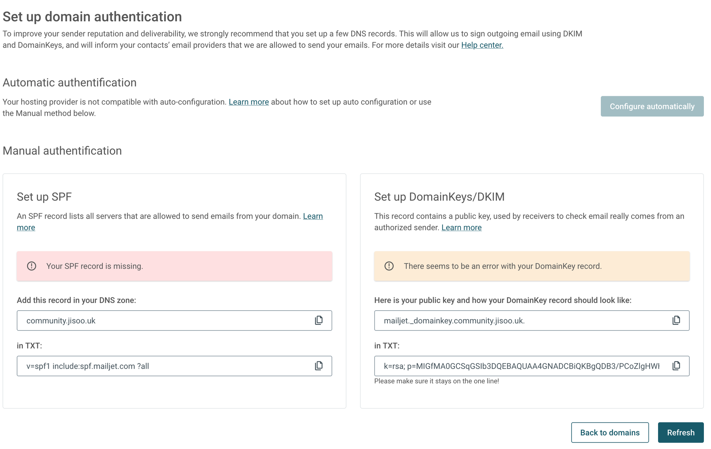

개요
이번 글에서는 차라투에서 사용하는 커뮤니티 플랫폼인 Discourse를 사용해서 커뮤니티를 구축하는 과정에 대해 소개합니다.
Discourse
Discourse는 쉽게 모던한 커뮤니티를 만들 수 있는 오픈소스 커뮤니티 플랫폼이며 사이트 개발과 배포를 완벽히 조절할 수 있도록 다양한 커스텀 옵션과 설치 방식을 제공합니다. 또한 10년이 넘게 수많은 테스트를 거쳐왔으며 카카오, Zoom, Jetbrain 등의 다양한 회사에서 사용 되고 있고 지속적으로 업데이트 되고 있습니다.
또한 적절히 분리된 게시판에 Markdown 게시글을 작성하는 기능부터 채팅 기능까지 사용할 수 있고, 다양한 테마를 다운받아 사용하거나 직접 코드를 수정해서 커뮤니티를 꾸밀 수 있습니다. 마지막으로 AI를 통한 챗봇이나 Data Explorer를 사용한 SQL 분석 기능 등 다양한 범위의 플러그인을 제공하며 이를 직접 개발할 수도 있습니다.


Discourse 커뮤니티 만들기
Discourse는 다양한 설치 방식을 지원하지만 공식적으로 지원되는 유일한 방법은 Docker 기반입니다.
Docker를 사용하면 빌드에 시간이 걸리는 단점이 있지만 Discourse를 제작하는데 사용된 Rails 웹 애플리케이션 프레임워크의 복잡한 설정을 하지 않아도 되며, 쉽게 배포하고 업데이트 할 수 있습니다.
반면에 macOS / Ubuntu / Windows 환경에 직접 설치하는 방법도 공식 GitHub에 자세히 작성되어 있습니다.
1. 메일서버 설정
메일 서비스는 계정 관리, 알림에 쓰이며 필수적으로 구성해야 합니다. 일반적인 Gmail과 같은 서비스가 아닌 transactional 이메일 서버를 사용해야 합니다.
저는 지원되는 이메일 서비스 중 Mailjet을 사용했습니다. Mailjet은 무료 요금제를 사용했을 때 일일 200건/월 6000건의 이메일을 보낼 수 있기에 적합하다고 생각했습니다.
도메인 인증받기
Mailjet 서비스에 회원 가입을 했다면 설정 페이지에 들어가서 도메인을 등록해줍니다.

Pending 우측 톱니바퀴 버튼 → Validate → TXT DNS 레코드 등록을 통해서 도메인을 인증해줍니다.

도메인 인증이 되었다면 Authenticate this domain 버튼을 클릭해서 SPF 및 DKIM 설정을 진행합니다.

TXT DNS 레코드를 추가해서 SPF 및 DomainKeys를 설정해서 mailjet 서비스가 도메인을 사용할 수 있도록 합니다.(반영까지는 시간이 걸릴 수 있으니 새로고침 해주시면 됩니다)

설정이 모두 되었다면 위 사진처럼 Active 라고 나옵니다.
발신 이메일 정하기
도메인 인증 바로 밑에 발송 주소를 정할 수 있는 부분이 있으며 메일의 발송자를 지정할 수 있는 부분입니다.
Discourse는 알림 용도로 메일 서비스를 사용하기 때문에 noreply를 붙여서 설정했습니다.

API Key 발급받기
계정관리 페이지에서 Main account의 API KEY를 확인하고 SECRET KEY를 받을 수 있습니다. 추후에 다시 다운받으려면 재발급이 필요하기에 꼭 어딘가에 저장해둬야 합니다.

2. Discourse 설치
Discourse를 도커에 설치하는 방법은 공식 가이드를 참조했습니다.
먼저 명령어를 실행해서 도커 이미지를 다운로드 받습니다. root 권한은 빌드 등에 필요합니다.
$ sudo -s # root 권한 얻기
$ git clone https://github.com/discourse/discourse_docker.git /var/discourse
$ cd /var/discourse
$ chmod 700 containers # 권한설정
$ vim containers/discourse.yml # 설정파일 생성(이름을 다르게 만들어서 구분이 용이하게 하려고 합니다.)공식 가이드 에서는 discourse-setup 라는 자동 설정 툴을 사용해서 질문에 답변을 하는 형태로 직관적인 설정을 지원하나, 디테일한 설정을 위해 설정 파일을 직접 만들어 주었습니다.
## discourse.yml
## 밑에 expose에서 443을 제외했기 때문에 ssl template를 주석처리 했습니다.
templates:
- "templates/postgres.template.yml"
- "templates/redis.template.yml"
- "templates/web.template.yml"
## Uncomment the next line to enable the IPv6 listener
#- "templates/web.ipv6.template.yml"
- "templates/web.ratelimited.template.yml"
## Uncomment these two lines if you wish to add Lets Encrypt (https)
#- "templates/web.ssl.template.yml"
#- "templates/web.letsencrypt.ssl.template.yml"
## which TCP/IP ports should this container expose?
## If you want Discourse to share a port with another webserver like Apache or nginx,
## see https://meta.discourse.org/t/17247 for details
## Nginx에서 직접 SSL 설정을 하려고 하므로 443을 제외했습니다.
expose:
- "80:80" # http
# - "443:443" # https
params:
db_default_text_search_config: "pg_catalog.english"
## Set db_shared_buffers to a max of 25% of the total memory.
## will be set automatically by bootstrap based on detected RAM, or you can override
#db_shared_buffers: "256MB"
## can improve sorting performance, but adds memory usage per-connection
#db_work_mem: "40MB"
## Which Git revision should this container use? (default: tests-passed)
## 기본 설정은 beta 버전으로 설치됩니다. 안정성을 위해 stable 버전으로 꼭 지정해주어야 합니다.
version: v3.1.2
## 다중 언어를 지원하므로 꼭 ko로 하지 않아도 됩니다.
env:
LC_ALL: en_US.UTF-8
LANG: en_US.UTF-8
LANGUAGE: en_US.UTF-8
# DISCOURSE_DEFAULT_LOCALE: en
## How many concurrent web requests are supported? Depends on memory and CPU cores.
## will be set automatically by bootstrap based on detected CPUs, or you can override
#UNICORN_WORKERS: 3
## Discourse를 배포할 도메인
## TODO: The domain name this Discourse instance will respond to
## Required. Discourse will not work with a bare IP number.
DISCOURSE_HOSTNAME: 'community.zarathu.com'
## Uncomment if you want the container to be started with the same
## hostname (-h option) as specified above (default "$hostname-$config")
#DOCKER_USE_HOSTNAME: true
## 관리자 이메일
## TODO: List of comma delimited emails that will be made admin and developer
## on initial signup example 'user1@example.com,user2@example.com'
DISCOURSE_DEVELOPER_EMAILS: 'office@zarathu.com'
## 메일서버 설정값
## TODO: The SMTP mail server used to validate new accounts and send notifications
# SMTP ADDRESS, username, and password are required
# WARNING the char '#' in SMTP password can cause problems!
DISCOURSE_SMTP_ADDRESS: in-v3.mailjet.com
DISCOURSE_SMTP_PORT: 587
DISCOURSE_SMTP_USER_NAME: API KEY
DISCOURSE_SMTP_PASSWORD: "SECRET KEY"
#DISCOURSE_SMTP_ENABLE_START_TLS: true # (optional, default true)
DISCOURSE_SMTP_DOMAIN: community.zarathu.com # mailjet에 등록한 도메인
DISCOURSE_NOTIFICATION_EMAIL: noreply@community.zarathu.com # 등록해둔 발신자 주소
## If you added the Lets Encrypt template, uncomment below to get a free SSL certificate
#LETSENCRYPT_ACCOUNT_EMAIL: me@example.com
## The http or https CDN address for this Discourse instance (configured to pull)
## see https://meta.discourse.org/t/14857 for details
#DISCOURSE_CDN_URL: https://discourse-cdn.example.com
## The maxmind geolocation IP address key for IP address lookup
## see https://meta.discourse.org/t/-/137387/23 for details
#DISCOURSE_MAXMIND_LICENSE_KEY: 1234567890123456
## 도커 컨테이너와 연결될 호스트 볼륨 경로 / 로그파일 경로
## The Docker container is stateless; all data is stored in /shared
volumes:
- volume:
host: /var/discourse/shared/standalone
guest: /shared
- volume:
host: /var/discourse/shared/standalone/log/var-log
guest: /var/log
## 플러그인 설정
## 빌드 전/후 실행될 명령어를 작성할 수 있음
## Plugins go here
## see https://meta.discourse.org/t/19157 for details
hooks:
after_code:
- exec:
cd: $home/plugins
cmd:
- git clone https://github.com/discourse/docker_manager.git
## Any custom commands to run after building
run:
- exec: echo "Beginning of custom commands"
## If you want to set the 'From' email address for your first registration, uncomment and change:
## After getting the first signup email, re-comment the line. It only needs to run once.
#- exec: rails r "SiteSetting.notification_email='info@unconfigured.discourse.org'"
- exec: echo "End of custom commands"위 설정 파일은 /var/discourse/sample/standalone.yml 을 베이스로 만들어진 예시입니다.
Discourse는 SSL을 위한 Let’s encrypt 인증서 관리를 자동으로 해주지만 추후에 와일드카드 인증서를 사용하기 위해 비활성화 시켰습니다. 기본 SSL을 활성화 시키려면 설정 파일에서 아래 부분을 수정해주시면 됩니다.
## discourse.yml
templates:
...
- "templates/web.ssl.template.yml"
- "templates/web.letsencrypt.ssl.template.yml"
...
expose:
- "80:80" # http
- "443:443" # https
...
env:
...
LETSENCRYPT_ACCOUNT_EMAIL: me@example.comDiscourse 버전은 공식 GitHub Tags 에서 버전명을 확인한 뒤에 안정적인 최신 버전으로 수정할 수 있습니다.
3. Discourse 시작
설정 파일을 저장하고 Discourse를 실행하는 단계입니다. Discours는 bootstrap(빌드)을 하는데 약 2-8분이 소요되므로 설정을 수정하면 꽤 오랜 시간을 기다려야 합니다.
설정 파일의 이름이 discourse.yml 이므로 파일명을 꼭 명시해줘야 합니다. 만약 파일명을 잘못 입력한다면 충돌이 일어나서 DB가 초기화될 수 있습니다.(경험담)
## /var/discourse/launcher 명령어 설정파일명
$ /var/discourse/launcher rebuild discourserebuild 명령어는 아래 3개의 명령어를 실행하는 것과 동일하게 작동합니다. 만약 설정파일을 수정했다면, 간단하게 위 명령어를 사용해서 다시 배포하면 새로운 수정 사항이 반영됩니다.
## equivalent with launcher rebuild
$ /var/discourse/launcher stop discourse
$ /var/discourse/launcher bootstrap discourse
$ /var/discourse/launcher start discourse작업이 완료됐다면, 설정 파일에 명시한 HOST_NAME인 http://community.zarathu.com 으로 접속할 수 있으며 관리자 계정 생성을 하고 가이드를 따라서 초기 설정을 해주시면 됩니다. (SSL이 비활성화된 상태이므로 http로 접속가능)
4. 외부 Nginx를 이용한 배포
서비스 관리의 단순화, 서버 리소스 효율성, 와일드카드 인증서를 사용하기 위해 단일 Nginx 도커 인스턴스를 사용해서 Discourse를 운영하기로 결정했습니다.
이를 위해 설정 파일을 수정해서 외부 포트 노출을 제거합니다.
## discourse.yml
...
## "80:80" -> "80"
expose:
- "80" # http
# - "443:443" # httpsDocker Network의 Bridge Network를 통해 Nginx와 Discourse 컨테이너를 연결해줍니다. Nginx 컨테이너는 실행되고 있다고 가정합니다.
## mybridge라는 이름의 bridge 네트워크 생성
$ docker network create --driver bridge mybridge
## nginx, discourse 컨테이너를 mybridge 네트워크에 연결
$ docker network connect mybridge nginx
$ docker network connect mybridge discourseNginx sites-available 설정 파일을 생성합니다.
## community.conf
## 80포트(http)
server {
listen 80;
listen [::]:80;
server_name community.zarathu.com;
add_header Content-Security-Policy upgrade-insecure-requests;
## https로 upgrade
location / {
return 301 https://$server_name$request_uri;
}
}
## 443 포트(https)
server {
listen 443 ssl http2;
server_name community.zarathu.com;
underscores_in_headers on;
## 따로 만들어둔 와일드카드 인증서 경로
ssl_certificate /etc/letsencrypt/fullchain.pem;
ssl_certificate_key /etc/letsencrypt/privkey.pem;
ssl_protocols SSLv3 TLSv1 TLSv1.1 TLSv1.2;
ssl_ciphers HIGH:!aNULL:!MD5;
## 보안을 위한 헤더
add_header Strict-Transport-Security max-age=31536000;
add_header X-Content-Type-Options "nosniff" always;
add_header X-Frame-Options "SAMEORIGIN" always;
add_header X-XSS-Protection "1; mode=block" always;
add_header Content-Security-Policy upgrade-insecure-requests;
ssl_stapling on;
ssl_stapling_verify on;
client_max_body_size 4G; # 사이트 업로드 크기 제한
## Docker network를 이용한 프록시
## discourse 컨테이너 내부 80포트로 연결됩니다.
location / {
proxy_pass http://discourse;
proxy_set_header Host $host;
proxy_set_header X-Real-IP $remote_addr;
proxy_set_header X-Forwarded-For $proxy_add_x_forwarded_for;
proxy_set_header X-Forwarded-Proto https;
proxy_set_header X-Forwarded-Scheme https;
proxy_buffer_size 128k;
proxy_buffers 4 256k;
proxy_busy_buffers_size 256k;
}
location = /robots.txt {
return 200 "User-agent: *\nDisallow: /";
}
}설정 파일을 활성화 시키기 위해서 sites-enabled에 심볼릭 링크를 생성합니다.
## nginx 설정 파일 위치는 /etc/nginx 로 가정
$ ln -s /etc/nginx/sites-available/community.conf /etc/nginx/sites-enabled/community.conf변경된 설정을 반영하기 위해 Nginx를 다시 로드해줍니다. 기존에 배포된 서비스의 중단을 최소화 하기 위해 reload를 사용했습니다.
## nginx 컨테이너의 nginx reload 명령 실행
## docker exec -it 컨테이너명 nginx -s reload
$ docker exec -it nginx nginx -s reload5. 개발 서버를 위한 다중 사이트 구성
Discourse는 설정 변경 후 bootstrap(빌드)을 하는데 매우 많은 시간이 소요되며 그 동안 기존의 서비스의 운영이 중단됩니다. 또한 여러 설정을 수정하거나 플러그인을 추가했을 때 오류가 발생할 수 있으므로 매우 위험합니다. 따라서 테스트를 할 수 있도록 개발용 Discourse 커뮤니티를 배포하게 되었습니다.
메인 커뮤니티와 동일한 파일 경로를 공유하고 같은 DB를 사용하게 할 수도 있지만 사이트의 안정성을 위해 완전한 분리를 하려고 하므로 새로운 discourse를 설치했습니다.
$ git clone https://github.com/discourse/discourse_docker.git /var/discourse-dev
$ cd /var/discourse-dev
$ chmod 700 containers # 권한설정
$ vim containers/discourse-dev.yml # 설정파일 생성(이름을 다르게 만들어서 구분이 용이하게 하려고 합니다.)새로운 Discourse 설정 파일을 생성합니다. 대부분의 내용은 메인 커뮤니티와 동일합니다.
## discourse-dev.yml
...
DISCOURSE_HOSTNAME: 'community.dev.zarathu.com'
...
volumes:
- volume:
host: /var/discourse-dev/shared/standalone
guest: /shared
- volume:
host: /var/discourse-dev/shared/standalone/log/var-log
guest: /var/log
...개발용 Discourse 커뮤니티를 실행합니다.
$ /var/discourse-dev/launcher rebuild discourse-dev이후에 외부 Nginx를 이용한 배포 설정도 메인 커뮤니티 설정과 동일하나 dev 커뮤니티 도메인과 컨테이너 이름 등을 수정해서 배포해 주시면 됩니다.
배포가 완료됐다면 메인 커뮤니티와 개발용 커뮤니티의 데이터를 동기화하기 위해 메인 커뮤니티를 백업합니다.

백업이 완료됐다면 목록에 표시되며 다운로드 버튼을 클릭해서 파일로 저장합니다.

저장한 파일을 개발 커뮤니티에 업로드한 뒤 복구를 진행하면 메인 커뮤니티의 사용자, 글, 설정 등이 개발용 서버에도 동일하게 적용됩니다.

디스코스를 설치 한 다음, 몇가지 커스텀을 거쳐 실제로 사용하는 커뮤니티의 이미지는 다음과 같습니다.

이어지는 글에서 커스텀 과정을 소개합니다.
Reuse
Citation
@online{kim2023,
author = {Kim, Jisoo},
title = {Discourse {기반} {커뮤니티} {구축}},
date = {2023-11-10},
url = {https://blog.zarathu.com/posts/2023-11-10-discourse1},
langid = {en}
}